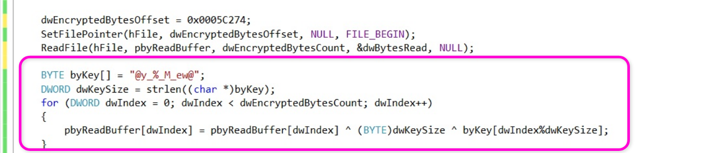
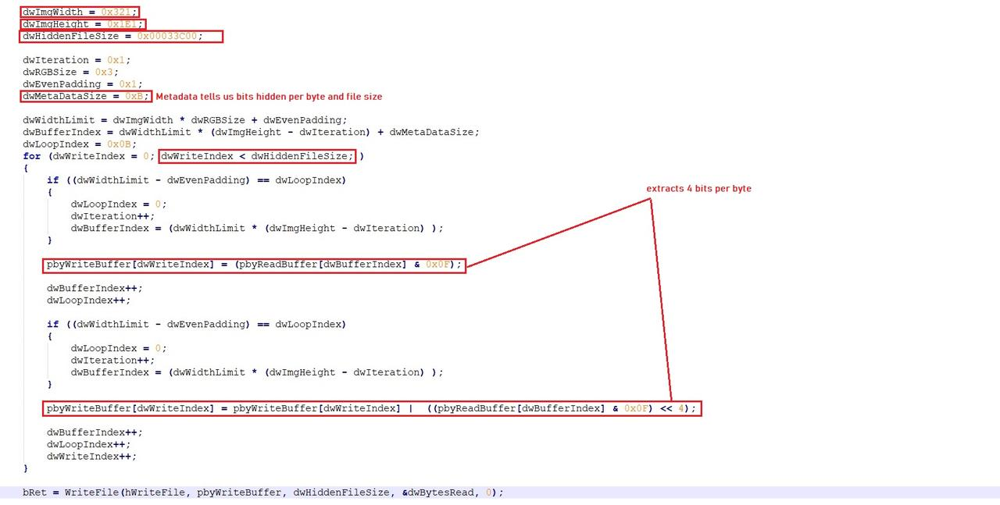
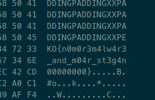

Ekoparty CTF: Stegano Writeup
Hace unos días fue la Ekoparty Online 2020. Esta vez la conferencia fue online, así que opté por participar activamente en el CTF en vez de asistir a las charlas. Muchos retos me resultaron bastante desafiantes, entre ellos Stegano, uno de los últimos que pudimos resolver junto a EzequielTBH.
Para este reto se nos entregaba una imagen en formato BMP, así que nos imaginamos que la flag iba a estar escondida ahí. Subiendo la imagen al buscador Google Images y agregando la palabra clave steganography, nos encontramos con un blogpost hablando de la esteganografía usada por Loki-Bot. Sabiendo que la temática del CTF era el malware, nos imaginamos que el problema venía por ahí.
{kind=link}
Leyendo el blogpost vimos que en una parte se describía, mostrando código C, el
proceso por el cual se descifra un mensaje aplicándole un XOR con la clave
@y_%_M_ew@ y con la variable de un byte dwKeysize, que representa
la longitud de esta clave (en este caso, 10 o 0xA):

También se mencionaba un proceso por el cual se obtiene el mensaje escondido dentro del fichero BMP:

Si bien el proceso de descifrado usando XOR se entendió bastante bien, este
código para obtener el mensaje en el BMP era algo confuso y tenía bastantes
constantes que no entendimos de dónde se sacaron. Hacer un programa que obtenga
el mensaje de forma perfecta nos hubiese llevado bastante tiempo, y faltaba
poco para que el CTF termine. Sin embargo, la perfección no es necesaria para
resolver un reto. Lo único que necesitábamos era obtener la flag, que tiene el
formato EKO{...}. No nos importa que la información descifrada conserve su
integridad, sino que nos podemos permitir que tenga algunos bytes que son
basura, siempre y cuando nos muestre la flag. Teniendo en cuenta esto, usamos
una versión simplificada del algoritmo de descifrado. No es para nada perfecta,
pero cumplió su propósito.
Si volvemos al código en C que lee el fichero BMP podemos notar algunas cosas:
- Se calcula desde qué byte empezar a descifrar teniendo en cuenta el header del fichero BMP, el ancho y alto de la imagen
- Mucha de la lógica en el código consiste en detectar cuándo se llegó al final de una fila para así pasar a la fila siguiente, arrancando desde la primer columna. Los bloques if dentro del código se encargan de hacer esto.
- En cada iteración del for, se leen dos bytes del fichero (esto se puede ver
en el código resaltado). El
& 0x0Fse queda solamente con los últimos 4 bits de cada byte, ignorando los bits más significativos. - Se juntan los 4 últimos bits del segundo byte leído con los 4 últimos del primero, para así escribir un byte por cada dos leídos
Teniendo en cuenta que el tamaño de la flag es de unos pocos bytes y que el ancho del BMP es de 801 píxeles, es poco probable que la flag esté distribuida en dos filas distintas, así que todo el código relacionado a los límites de la imagen se puede ignorar. Además, como no nos importa descifrar información corrupta, siempre y cuando se encuentre la flag, tampoco es necesario calcular desde dónde empezar a descifrar: para simplificar el código, podemos descifrar todo desde el inicio hasta el final de la imagen.
Sabiendo esto, es posible tener una solución más simple al código en C
descripto en el blogpost. Solamente habría que ir leyendo el fichero BMP de a
dos bytes, juntarlos en un único byte usando operaciones a nivel de bits, y
aplicarle un XOR con la clave @y_%_M_ew@. Esto sería bastante sencillo,
aunque es necesario tener en cuenta algunas cosas:
- Como se lee de a dos bytes, no es lo mismo arrancar en un byte par que en uno impar. Una de las dos formas va a producir información incorrecta.
- El cifrado XOR depende de la posición en la que se arranca. Si arrancamos a descifrar desde una posición incorrecta, la clave puede quedar "desfasada" y descifrar cualquier cosa
Como solución a estos problemas, usamos un método sucio pero eficiente: probemos todas las combinaciones hasta dar con el resultado. Podemos leer primero desde un byte par, después desde uno impar. O podemos probar con todas las posibles rotaciones de la clave (como es de 10 bytes, hay 10 posibles rotaciones).
Finalmente, armamos el siguiente script de Python que lee la imagen y prueba descifrarla usando las combinaciones descriptas anteriormente:
import sys with open('stegano.bmp', 'rb') as fp: bmp_contents = fp.read() out = open('stegano-output', 'wb') def try_decode(key, contents): encoded = [] for i in range(0, len(contents)-1, 2): first_byte, second_byte = contents[i], contents[i+1] encoded.append(((second_byte & 0x0f) << 4) | (first_byte & 0x0f)) decoded = [(c ^ 0xA ^ key[i%len(key)]) for (i, c) in enumerate(encoded)] out.write(bytes(decoded)) ORIGINAL_KEY = b'@y_%_M_ew@' def possible_keys(): # rotate the original key for i in range(len(ORIGINAL_KEY)): yield ORIGINAL_KEY[i:] + ORIGINAL_KEY[:i] for key in possible_keys(): try_decode(key, bmp_contents) try_decode(key, bmp_contents[1:]) # arrancar desde un byte impar
Una vez que lo ejecutamos y abrimos el fichero stegano-output con un editor
hexadecimal, encontramos la flag que resultó siendo
EKO{n0m0r3m4lw4r3_and_m04r_st3g4n00000000}:

Así pudimos resolver este reto de esteganografía. Si bien este tipo de retos no suelen ser mis preferidos, en este caso lo disfruté bastante. No es el clásico ejemplo de una imagen pasada por el steghide o herramientas similares, sino que requería entender el código que usaba un malware para ocultar la información.
Para concluir el post, quiero destacar la importancia de reconocer que el objetivo de un reto es obtener la flag. Teniendo en cuenta esto, es posible obviar ciertos detalles que no aportan mucho y son bastante tediosos, como fue en este caso la lógica de decidir qué bytes usar para descifrar. Si no hubiese tenido esto en cuenta, quizás no hubiese podido resolver el reto a tiempo.
Espero con este post haber descripto no solo la solución al reto, sino también el proceso que seguimos para solucionarlo. Pronto publicaré las soluciones a algún otro reto que me haya gustado.
Saludos!
Comments
Comments powered by Disqus